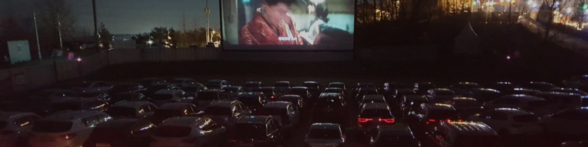

자동차 극장
퍼스트가든 자동차극장은 2019년 12월에 문을 열어
깔끔한 주변 시설과 함께 쾌적환 영화감상을 위한 5.1채널 돌비
스테레오를 지원하는 20,000 ANSI 급의 고화질 디지털 영사기를
보유하고 있으며 특히, 야외에서 관람해야하는 영화관 특성에 맞추어 특수 고반사 도료로스크린을 만들어 더욱더 깨끗한 화면과
현장감있는 음질을 즐길 수 있습니다.
| 구분 | 1회 | 2회 | 금액 | 비고 |
|---|---|---|---|---|
| 평일 | 20:00 | 22:25 | 22,000 /1대당 | 평일, 공휴일 동일 |
| 주말,공휴일 | 20:00 | 22:25 |
고객 안내
- 정산 티켓을 운전석 와이퍼에 꼭 끼워주세요.
- 1부 관람차량은 극장내 주차
- 2부 관람차량은 2주차장 내 주차
- 매점과 화장실은 자동차극장 내부에 있습니다.
- 미결제 차량은 과징금이 발생될 수 있습니다.
- 문의 : 031-957-6861
- 대관 및 단체 관람, 이벤트, 광고 문의 환영
2022년 05월 17일 상영안내


상영시간은 당일 상황에 따라 변동될 수 있습니다.